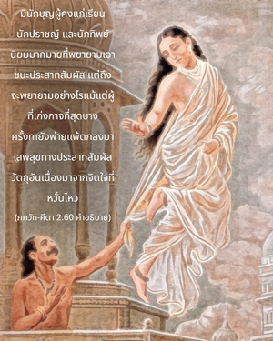

โอ้ อรฺชุน ประสาทสัมผัสนั้นรุนแรงและรวดเร็วมากจนสามารถบังคับนำพาจิตใจให้เตลิดเปิดเปิงไป แม้จิตใจของผู้มีดุลยพินิจที่พยามยามควบคุมมัน

มีนักบุญผู้คงแก่เรียน นักปราชญ์ และนักทิพย์นิยมมากมายที่พยายามเอาชนะประสาทสัมผัส แต่ถึงจะพยายามอย่างไรแม้แต่ผู้ที่เก่งกาจที่สุดบางครั้งยังพ่ายแพ้ ตกลงมาเสพสุขทางประสาทสัมผัสวัตถุอันเนื่องมาจากจิตใจที่หวั่นไหว แม้แต่ วิศฺวามิตฺร ผู้เป็นทั้งนักปราชญ์ที่ยิ่งใหญ่และโยคีที่สมบูรณ์ได้ถูกนาง เมนกา ยั่วยวนให้ไปเสพสุขทางเพศ ถึงแม้ว่าโยคีพยายามที่จะควบคุมประสาทสัมผัสด้วยการบำเพ็ญเพียรอย่างหนักและฝึกโยคะด้วยวิธีการต่างๆ และแน่นอนว่ายังมีตัวอย่างคล้ายคลึงกันนี้อีกมากในประวัติศาสตร์โลก ฉะนั้น จึงเป็นการยากมากที่จะควบคุมจิตใจและประสาทสัมผัสโดยไม่มีกฺฤษฺณจิตสำนึกอย่างสมบูรณ์ หากไม่ใช้จิตใจทำสมาธิอยู่ที่องค์กฺฤษฺณ เราก็จะไม่สามารถหยุดกิจกรรมทางวัตถุได้ ศฺรี ยามุนาจารฺย นักบุญและสาวกผู้ยิ่งใหญ่ได้ให้ตัวอย่างเชิงปฏิบัติดังนี้
ยัท-อะวะธิ มะมะ เจตะห์ กฤษณะ-ปาทาระวินเท
นะวะ-นะวะ-ระสะ-ธามันย อุทยะตัม รันตุม อาสีต
ตัท-อะวะธิ พะตะ นารี-สังคะเม สมรรยะมาเน
ภะวะติ มุขะ-วิการะห์ สุษฐุ นิษฐีวะนัม จะ
“ตั้งแต่นำจิตใจมาปฏิบัติรับใช้พระบาทรูปดอกบัวขององค์ศฺรีกฺฤษฺณ อาตมาได้รับความสุขในอารมณ์ทิพย์ที่สดใหม่อยู่เสมอ เมื่อใดที่เริ่มคิดถึงเรื่องเพศสัมพันธ์กับผู้หญิง อาตมาจะเมินหน้าหนีทันที และถ่มน้ำลายให้กับความคิดเช่นนี้”
กฺฤษฺณจิตสำนึกมีความสวยงามแบบทิพย์จนทำให้ความสุขทางวัตถุหมดรสชาติไปโดยปริยาย เหมือนกับคนที่หิวโหยเมื่อได้รับประทานอาหารที่มีคุณค่าทางอาหารในปริมาณที่เพียงพอจะรู้สึกพึงพอใจ มหาราช อมฺพรีษ ทรงได้รับชัยชนะจากโยคีผู้ยิ่งใหญ่ ดุรวาสา มุนิ เพียงเพราะว่าจิตใจของพระองค์ทรงปฏิบัติอยู่ในกฺฤษฺณจิตสำนึก (ส ไว มนห์ กฺฤษฺณ-ปทารวินฺทโยรฺ วจำสิ ไวกุณฺฐ-คุณานุวรฺณเน)